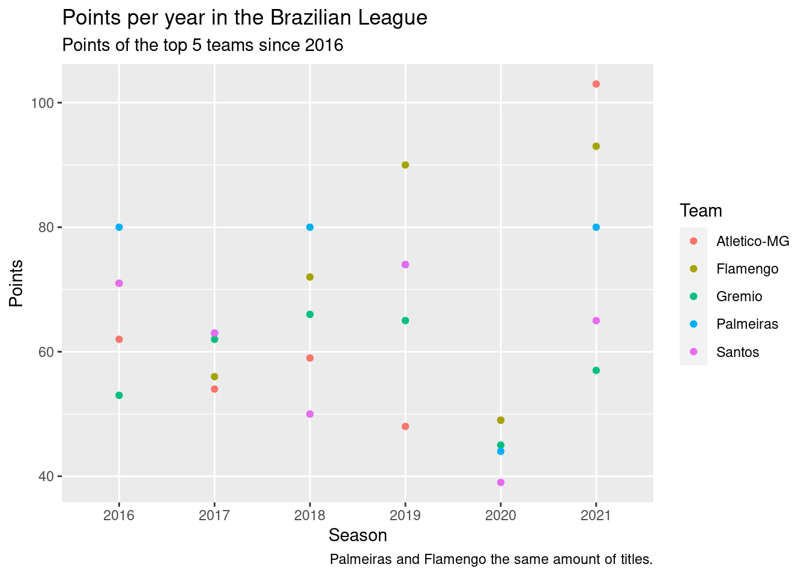

library(tidyverse)Data Analysis
One of the things I am passionate about is soccer, both playing and watching. My favorite team is Palmeiras (and it should be your favorite team too)! In the past three years, we won two South American Cups (2020 and 2021), one Brazilian Cup (2020), and one Brazilian League (2022). If this information is not enough to make you believe this is the best team in the world, I will use the information of the past Brazilian League to show how Palmeiras stands out against the other teams.
This analysis was made to anyone who knows what soccer is! The data used was collected by Adão Duque and it is available on his github repo and also on kaggle. It shows the information of the 7645 Brazilian League matches between the years of 2003 and 2021. In addition, it also presents some statistics for these games. A file called Legenda.txt includes the dictionary for the data.
First, we load the data for the matches, select and rename (to English) the columns used in this data and select the last 5 years.
matches <- read_csv("data/br/campeonato-brasileiro-full.csv", show_col_types = FALSE) %>%
select(c(data, mandante, visitante, vencedor, mandante_placar, visitante_placar)) %>%
rename(date = data,
home = mandante,
away = visitante,
winner = vencedor,
home_score = mandante_placar,
away_score = visitante_placar) %>%
filter(date > "2016-01-01")
matches# A tibble: 2,279 × 6
date home away winner home_score away_score
<date> <chr> <chr> <chr> <dbl> <dbl>
1 2016-05-14 Palmeiras Athletico-PR Palmeiras 4 0
2 2016-05-14 Flamengo Sport Flamengo 1 0
3 2016-05-14 Atletico-MG Santos Atletico-MG 1 0
4 2016-05-14 Coritiba Cruzeiro Coritiba 1 0
5 2016-05-15 Santa Cruz Vitoria Santa Cruz 4 1
6 2016-05-15 Botafogo-RJ Sao Paulo Sao Paulo 0 1
7 2016-05-15 Figueirense Ponte Preta - 0 0
8 2016-05-15 Corinthians Gremio - 0 0
9 2016-05-15 America-MG Fluminense Fluminense 0 1
10 2016-05-15 Internacional Chapecoense - 0 0
# … with 2,269 more rowsNow, we will create a column for the team and the condition it player. Then we will create columns for the number of points awarded in each game. If a team wins it gets 3 points, if it draws it gets 1 point, if it looses 0 points. We will also create a column for the season (year).
matches_transformed <- matches %>% select(date, home, away, winner) %>%
pivot_longer(cols = c(home, away), values_to = "team", names_to = "location") %>%
mutate(points = case_when(winner == team ~ 3,
winner == "-" ~ 1,
TRUE ~ 0),
victory = case_when(winner == team ~ 1,
TRUE ~ 0),
draw = case_when(winner == "-" ~ 1,
TRUE ~ 0),
year = format(date, "%Y"))
matches_transformed# A tibble: 4,558 × 8
date winner location team points victory draw year
<date> <chr> <chr> <chr> <dbl> <dbl> <dbl> <chr>
1 2016-05-14 Palmeiras home Palmeiras 3 1 0 2016
2 2016-05-14 Palmeiras away Athletico-PR 0 0 0 2016
3 2016-05-14 Flamengo home Flamengo 3 1 0 2016
4 2016-05-14 Flamengo away Sport 0 0 0 2016
5 2016-05-14 Atletico-MG home Atletico-MG 3 1 0 2016
6 2016-05-14 Atletico-MG away Santos 0 0 0 2016
7 2016-05-14 Coritiba home Coritiba 3 1 0 2016
8 2016-05-14 Coritiba away Cruzeiro 0 0 0 2016
9 2016-05-15 Santa Cruz home Santa Cruz 3 1 0 2016
10 2016-05-15 Santa Cruz away Vitoria 0 0 0 2016
# … with 4,548 more rowsNow, we will see the top 5 teams per points. This information will be useful to filter the data when plotting the scores by team, since showing all 20 teams would cause confusion.
matches_transformed %>%
group_by(team) %>%
summarize(sum_points = sum(points)) %>%
arrange(desc(sum_points)) %>%
top_n(5)# A tibble: 5 × 2
team sum_points
<chr> <dbl>
1 Flamengo 431
2 Palmeiras 421
3 Atletico-MG 375
4 Santos 362
5 Gremio 348The previous information might mislead you into thinking that Flamengo is the best team, but this is not true since one team can score a lot of points in one year and not as much in the others. That is where data visualization comes in.
matches_transformed %>%
group_by(team, year) %>%
summarize(sum_points = sum(points)) %>%
filter(team %in% c("Palmeiras", "Flamengo", "Atletico-MG", "Santos", "Gremio")) %>%
ggplot(aes(x=year, y=sum_points, color=team)) +
geom_point() +
labs(title="Points per year in the Brazilian League",
subtitle="Points of the top 5 teams since 2016",
caption="Palmeiras and Flamengo the same amount of titles.",
x="Season", y="Points", color="Team")
In this period, Palmeiras and Flamengo won the league twice (in 2017 another team won, but it was not on the top 5). Therefore, they are the most successful teams in the league and will be the focus of this analysis. Now we plot the percentage of wins, draws and losses.
matches_transformed %>%
group_by(team, year) %>%
summarize(n_victories=sum(victory), n_draws=sum(draw)) %>%
mutate(n_losses=(38-n_victories-n_draws)) %>% # there are 38 games in total
filter(team %in% c("Palmeiras", "Flamengo")) %>%
pivot_longer(c(n_victories, n_draws, n_losses), values_to="n_results", names_to="results") %>%
ggplot(aes(x=team, y=n_results, fill=results)) +
geom_bar(position="stack", stat = "identity") +
facet_wrap(. ~ year) +
labs(title="Results per year in the Brazilian League",
subtitle="Results for Flamengo and Palmeiras since 2016",
caption="The teams overcame each other in the same amount of seasons.",
x="Team", y="Number of Matches", fill="Result") +
scale_fill_discrete(labels=c('Draw', 'Loss', 'Win'))